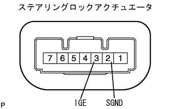

Steering Lock System Steering Lock Does Not Operate |
| Step 1 | Check DTC Output |
Using SST (TaSCAN), check whether any certification ECU diagnostic trouble codes are output. (see)
| Result | Proceed to |
|---|---|
| No certification ECU malfunction code output | A |
| Certification ECU malfunction code output | B |
|
| ||||
| A | |
| Step 2 | Check DTC Output |
Using SST (TaSCAN), check whether any main body ECU diagnostic trouble codes are output. (see)
| Result | Proceed to |
|---|---|
| No main body ECU malfunction code output | A |
| Main body ECU malfunction code output | B |
|
| ||||
| A | |
| Step 3 | Read TaSCAN Data |
Connect SST (TaSCAN) to DLC3.
Within 10 seconds of performing the engine starting operation, read the certification ECU data monitor and check [Steering Lock Operation Request Reception History]. (see)
|
| ||||
| OK | |
| Step 4 | Inspect Steering Lock Actuator Assembly (IGE and SGND Continuity) |
 |
Turn IG ON.
Using SST (Toyota electrical tester), inspect the voltage between steering lock actuator terminals 3 (IGE) ←→ 2 (SGND) immediately after opening the door with the IG OFF and the shift in P.
| Result | Proceed to |
|---|---|
| 1 V or less occurs immediately after door is opened | A |
| Remains at 11to14 V and never drops to 1 V or less | B |
|
| ||||
| A | ||
| ||
| Step 5 | Read TaSCAN Data |
Using SST (TaSCAN), read the certification ECU data monitor and check [S Code Verification Result]. (see)
|
| ||||
| OK | |
| Step 6 | Read TaSCAN Data |
Using SST (TaSCAN), read the certification ECU data monitor and check [L Code Verification Result]. (see)
|
| ||||
| OK | |
| Step 7 | Replace Steering Lock Actuator Assembly |
Replace the steering actuator with a new one. (see)
Turn IG ON.
Operate the steering wheel and check the steering lock status.
|
| ||||
| OK | ||
| ||
| Step 8 | Replace Immobiliser Code Computer (ID Code Box) |
Replace the ID code box with a new one. (Refer to the procedure)
Using SST (TaSCAN) again, read the certification ECU data monitor and check [S Code Verification Result]. (see)
|
| ||||
| OK | ||
| ||
| Step 9 | Replace Immobiliser Code Computer (ID Code Box) |
Replace the ID code box with a new one. (Refer to the procedure)
Using SST (TaSCAN) again, read the certification ECU data monitor and check [L Code Verification Result]. (see)
|
| ||||
| OK | ||
| ||